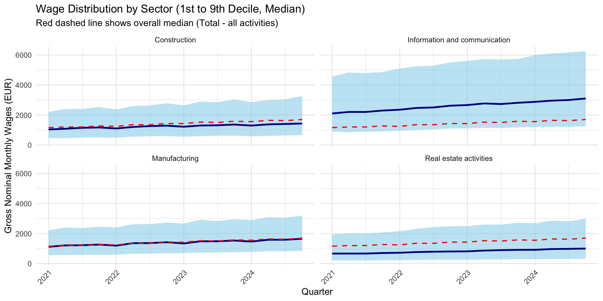

Eesti Pank
2025-04-17
pxwebpxweb R packagepxweb_get(), pxweb_get_metadata())PXWEB METADATA
PA111: AVERAGE MONTHLY GROSS WAGES (SALARIES), MEDIAN, DECILES AND NUMBER OF EMPLOYEES BY ECONOMIC ACTIVITY SECTION (QUARTERLY)
variables:
[[1]] Näitaja: Indicator
[[2]] Tegevusala: Economic activity
[[3]] Vaatlusperiood: Reference period$code
[1] "Näitaja"
$text
[1] "Indicator"
$values
[1] "GR_W_AVG" "NR_EMPL" "GR_W_D1" "GR_W_D2" "GR_W_D3"
[6] "GR_W_D4" "GR_W_D5" "GR_W_D6" "GR_W_D7" "GR_W_D8"
[11] "GR_W_D9" "GR_W_AVG_SM"
$valueTexts
[1] "Average monthly gross wages (salaries), euros"
[2] "Number of employees"
[3] "1st decile of monthly gross wages (salaries), euros"
[4] "2nd decile of monthly gross wages (salaries), euros"
[5] "3rd decile of monthly gross wages (salaries), euros"
[6] "4th decile of monthly gross wages (salaries), euros"
[7] "Median (5th decile) of monthly gross wages (salaries), euros"
[8] "6th decile of monthly gross wages (salaries), euros"
[9] "7th decile of monthly gross wages (salaries), euros"
[10] "8th decile of monthly gross wages (salaries), euros"
[11] "9th decile of monthly gross wages (salaries), euros"
[12] "Percentage change in average gross wages (salaries) compared to same period in previous year, %"
$elimination
[1] FALSE
$time
[1] FALSEpx_query_list1 <- list(
"Näitaja" = c("GR_W_D1", "GR_W_D5", "GR_W_D9"),
"Tegevusala" = "*",
"Vaatlusperiood" = "*"
)
pa111 <- pxweb_get(
url = "https://andmed.stat.ee/api/v1/en/stat/PA111",
query = px_query_list1
)
# Convert to data frame
pa111.df <- as.data.frame(pa111, column.name.type = "text", variable.value.type = "text")
pa111.code <- as.data.frame(pa111, column.name.type = "code", variable.value.type = "code")
pa111.df$Näitaja <- pa111.code$Näitajaselected_sectors <- c("Manufacturing", "Construction", "Information and communication", "Real estate activities", "Total - all activities")
# Clean and reshape
pa111_plotdata <- pa111.df %>%
mutate(
quarter = yq(str_replace(`Reference period`, " ", "-")),
Indicator = recode(
Näitaja,
"GR_W_D1" = "D1",
"GR_W_D5" = "Median",
"GR_W_D9" = "D9"
)
) %>%
filter(
`Economic activity` %in% selected_sectors,
Indicator %in% c("D1", "Median", "D9")
) %>%
select(quarter, `Economic activity`, Indicator, value = `PA111: AVERAGE MONTHLY GROSS WAGES (SALARIES), MEDIAN, DECILES AND NUMBER OF EMPLOYEES`) %>%
pivot_wider(names_from = Indicator, values_from = value)ggplot(pa111_plotdata, aes(x = quarter)) +
geom_ribbon(aes(ymin = D1, ymax = D9), fill = "skyblue", alpha = 0.5) +
geom_line(aes(y = Median), color = "darkblue", linewidth = 1) +
geom_line(aes(y = total_median), color = "red", linetype = "dashed", linewidth = 0.7) +
facet_wrap(~`Economic activity`, ncol = 2) +
labs(
title = "Wage Distribution by Sector (1st to 9th Decile, Median)",
subtitle = "Red dashed line shows overall median (Total - all activities)",
x = "Quarter",
y = "Gross Nominal Monthly Wages (EUR)"
) +
theme_minimal() +
theme(axis.text.x = element_text(angle = 45, hjust = 1))
T render the document to all output formats (docx, Beamer, Reveal.js): run programmatically from another script or the R console:
or from the command line: